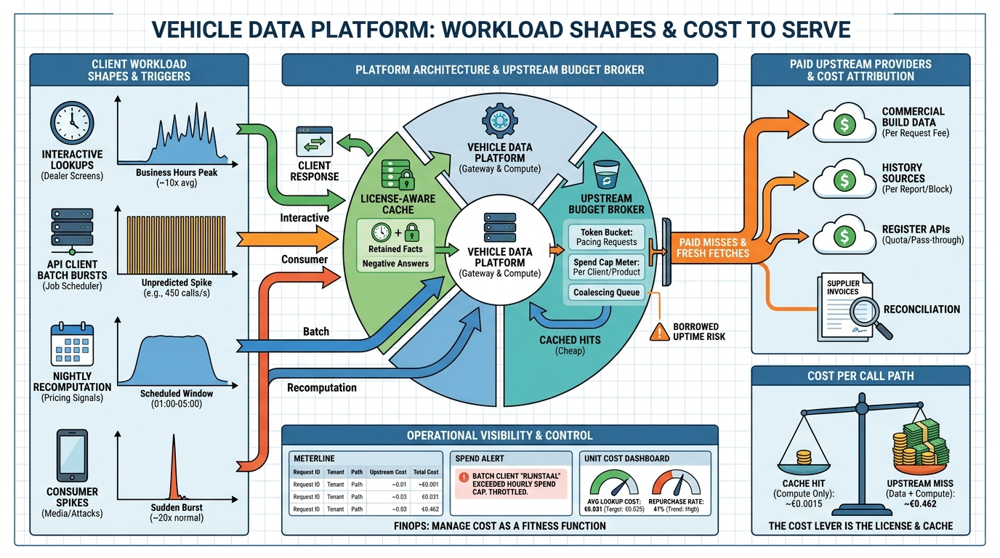

Part VII — OPERATIONS: Running the Platform
Volumes, Peaks and Paid Lookups: Scalability and Operating Cost

Image generated by Google Gemini (gemini-3-pro-image-preview)
Part VII — OPERATIONS: Running the Platform

Image generated by Google Gemini (gemini-3-pro-image-preview)